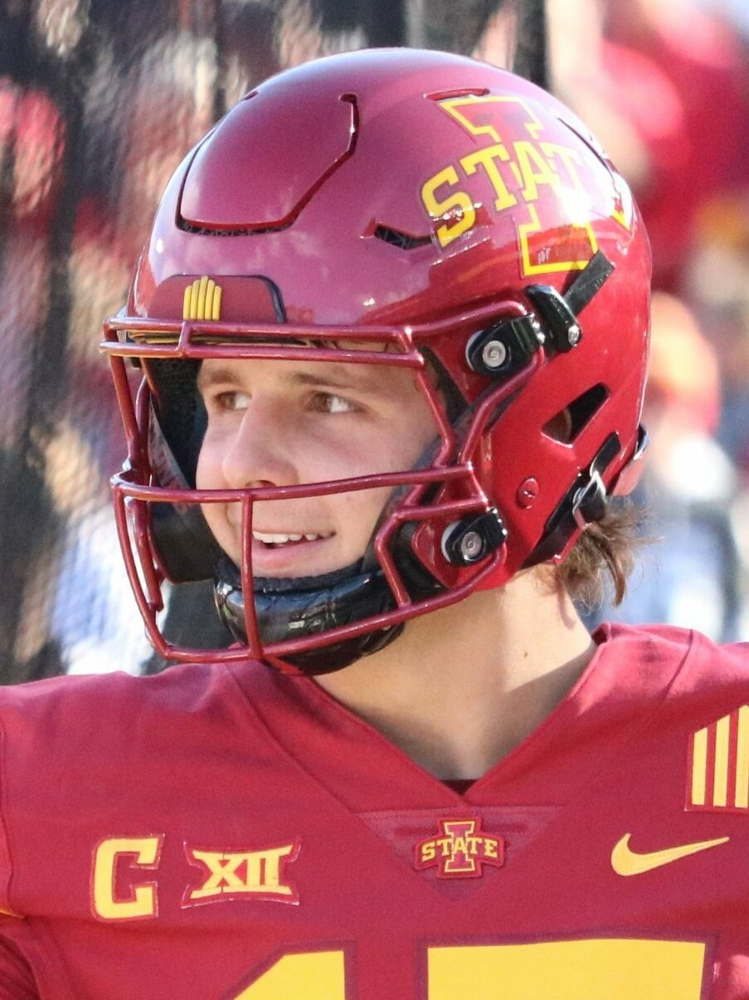

Six and Oh, Barely. The '72 Dolphins Should Be Sweating.
I was up off the couch for the fourth down at our 17 and I didn't sit back down until the last sack. My knees are still mad at me.

Six and oh.
I'm going to type it again because last night I wasn't sure I'd get to. Six and oh. We beat Washington 23 to 17 on Monday night at Levi's, and the final snap was Ogbo Okoronkwo and Romello Height dragging Jayden Daniels down on third and 22 with the clock bleeding out, and I yelled loud enough that my neighbor's dog started up and didn't quit for ten minutes.
Somewhere in Florida a few old men just looked at the calendar.
I know. I know it's October. I know you're not supposed to say the word perfect out loud before Thanksgiving, and I know the 1972 Dolphins are the only team that's ever done it, 14 and 0 and then three playoff wins to finish 17 and 0. I know the 2007 Patriots got all the way to 18 and 0 and then lost the one game that mattered. I'm not saying it's happening. I'm saying we're the only team in football that's played six games and won all six, and Minnesota and Kansas City are both sitting at five and oh behind us, and the champagne crowd has to at least be checking the scores now.
We play both of them, by the way. The Vikings in Mexico City on November 22. The Chiefs in Kansas City two days after Christmas. If you want to know when the old Dolphins should actually start worrying, circle those.
The first half was the best football I've seen all year
Twenty to three at the half. It honestly felt worse for Washington than that. We ran 41 plays to their 17. We had 303 yards and 17 first downs, and they had 90 yards and two first downs, and I spent halftime texting my brother about playoff seeding like a lunatic.
Christian McCaffrey punched in two touchdowns on the ground and caught nine balls on top of that. George Kittle went for 69 and a score. And Mike Evans, with the Achilles that had him questionable all week, caught three passes for 94 yards in one half like a man who'd never heard of an injury report.
Then he went to the locker room and didn't come back.

Before I get to the ugly part, let me have my moment with Brock. Purdy went 21 of 29 for 264 with no interceptions, and when the night was done his career passer rating sat at 105.6. That's the best in the history of the league. Lamar Jackson is second at 102.7. The guy they picked last in the whole draft is now the most efficient passer anybody's ever kept score of, and people in other cities will still tell you he's a system quarterback. Let them. I've got the whole list right here if they want to argue.
And then the second half happened
I'm not going to pretend I enjoyed it. Washington outgained us 224 yards to 72 after halftime. Our last three drives were three and outs that went a combined seven yards. Seven! I've seen people get more yardage trying to merge onto the Bay Bridge at five o'clock. With no Evans, no Bosa, and a receiver room held together by Brandin Cooks and hope, the offense just stopped, and Daniels threw both of his touchdowns after the break to turn a 23 to 3 laugher into a six point game.
The defense didn't help itself either. Four penalties on our guys handed Washington first downs, and the worst one was a beauty. Height sacked Daniels with under three minutes left, I was celebrating, and then the flag. Illegal contact on Ashtyn Davis. First down. I said things my mother wouldn't like.
Then fourth down from our 17, 1:54 to play. Daniels threw it to Treylon Burks in the end zone and for one horrible second Burks had it. He had it. And Malik Mustapha ripped it out of his hands before he came down and they called it incomplete, and I'm going to buy that kid a steak if I ever run into him at a Safeway.
You'd think that's the end. It wasn't, because then we went three and out again and Siran Neal got called for fair catch interference on the punt, 15 more yards, and Washington had it at their own 46 with a chance to steal the whole thing on our field. They got to our 28. Then Daniels got flagged for grounding, the ten second runoff put them at third and 22 with six seconds left, and Okoronkwo and Height met at the quarterback.
Game.
So, are the Dolphins in trouble?
Honest answer? Not yet. But they should be paying attention. This is only the second time Kyle has started six and oh. The other was 2019, and that team went to the Super Bowl. We've won in Melbourne, in Seattle, and on our own field with a roster that looks like a MASH unit. Nick Bosa hasn't played since before Week 3. Evans is hurt again. And we keep winning anyway, which is either the sign of a real team or a coin that's landed heads six straight times, and I've decided not to think too hard about which.
What scares me is the math. A perfect season now means 17 and 0 in the regular season before you even get to January. That's three more games than Miami had to win. Last night was the kind of game a 17 and 0 team wins, sure, but it's also the kind of game that ends streaks. One more second of Burks holding onto that ball and I'm writing a very different column this morning.
Next up is Atlanta, Sunday at 10 Pacific, and then the bye. Get through the Falcons and we sit at seven and oh for two weeks while the training room does its thing. The results and who's left are on the schedule hub. Evans and everybody else live on the injury report, and the rest of it's on the 49ers hub.
I'm not saying perfect. I'm saying six and oh, and I'm saying the old guys in Miami should keep the champagne on ice a little longer than usual this year.
My knees are still mad at me. Worth it.
More coverage: 49ers · NFL · Bay Area Sports Blog home